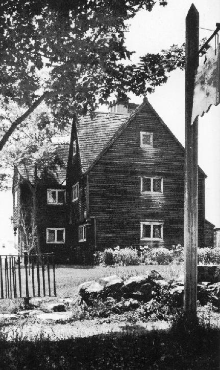
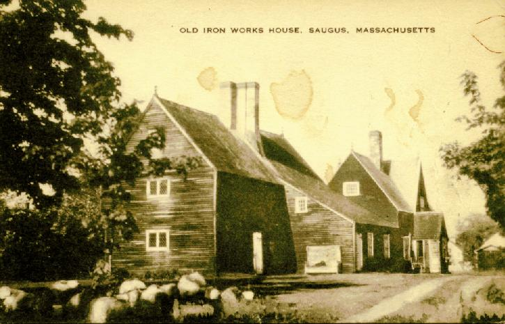
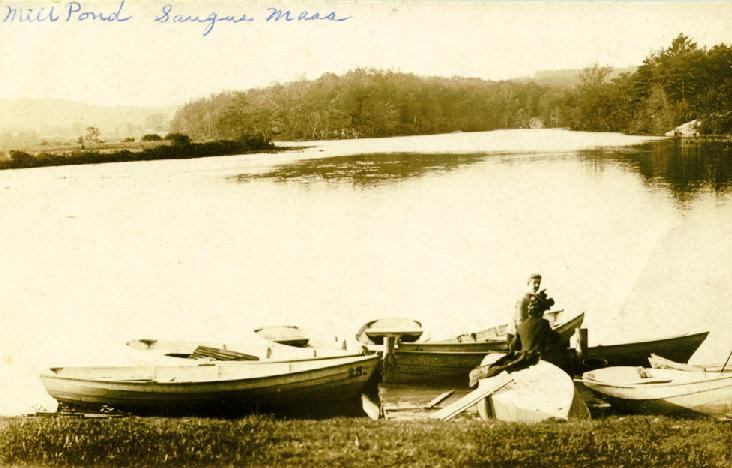
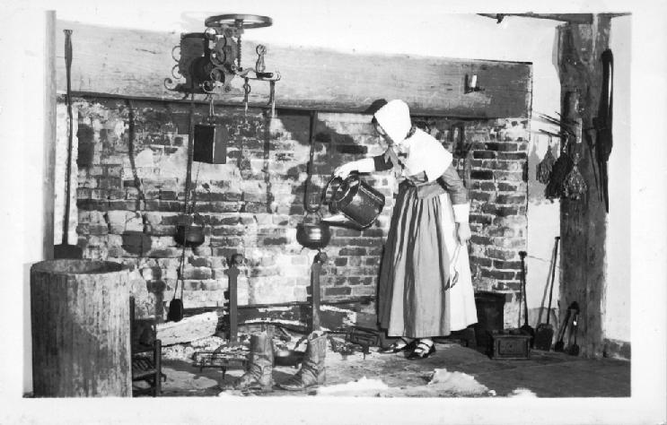
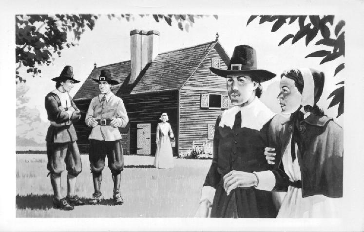
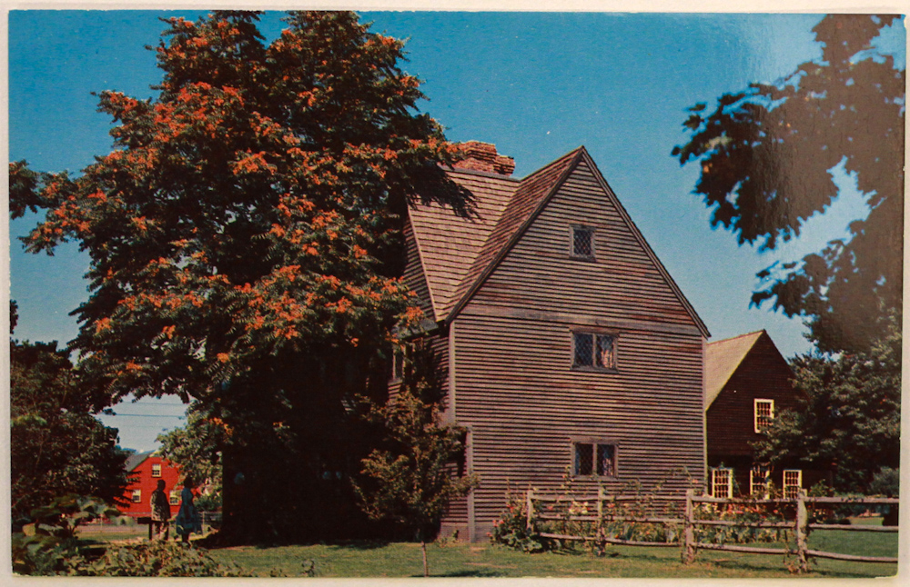

Saugus Iron Works Postcards
Select a postcard image for your assignment. Click on any image to see it larger.
| Number | Postcard Image | Credit |
|---|---|---|
| 1 |

Ironmaster's House at the Iron Works |
Courtesy of G. W. Brown Archived from Saugus.net |
| 2 |

OLD IRON WORKS HOUSE, SAUGUS. MASSACHUSETTS |
Courtesy of G. W. Brown Archived from Saugus.net |
| 3 |

Mill Pond Saugus, Mass |
Courtesy of G. W. Brown Archived from Saugus.net |
| 4 |

Fireplace in the Ironmaster's House in the Iron Works |
Courtesy of G. W. Brown Archived from Saugus.net |
| 5 |

The Ironmaster's House at the Iron Works, as it supposedly looked during Colonial Days. |
Courtesy of G. W. Brown Archived from Saugus.net |
| 6 |

The Ironmaster's House, printable front to back |
Courtesy of Historic New England |